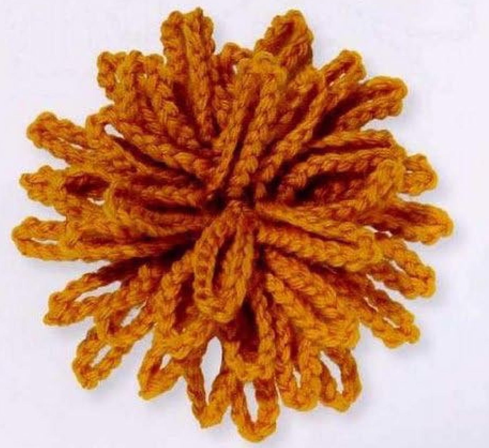
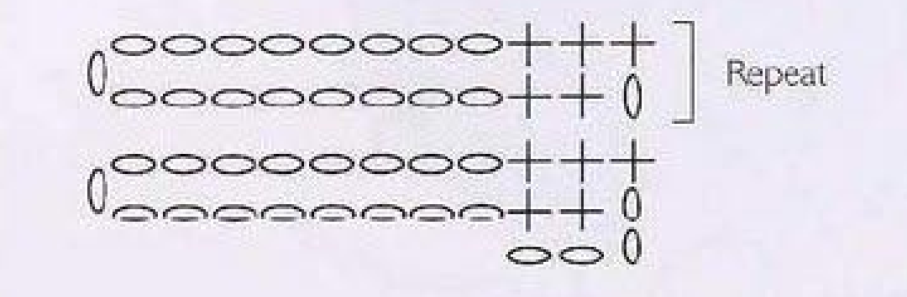
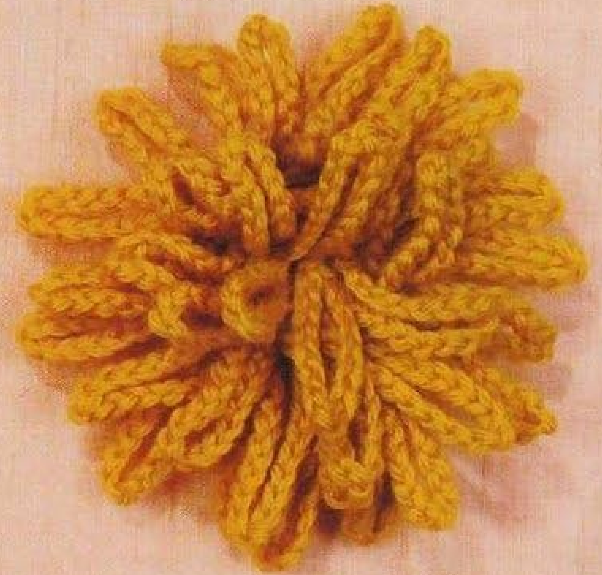

This crochet chrysanthemum flower pattern makes a textured flower from a narrow strip with long chain loops along one edge. Once the strip is complete, it is coiled and stitched into a layered bloom. The design is pattern 43, Chrysanthemum, in Lesley Stanfield’s 100 Flowers to Knit & Crochet. This guide keeps its original construction and explains the UK instructions in US crochet terms, with a compact pattern card and practical notes for counting, shaping, and assembly.

Key Takeaways
- A dimensional crochet flower made from one narrow strip, then coiled and sewn.
- DK wool is the source yarn; the pictured golden ochre is a color choice.
- US single crochet forms the band, with a 17-chain loop in each double row.
- Work 36 loops total, including the first two units and 34 further repeats.
- Confident beginners can practice even chains, turning, and progressive assembly.
How This Looped Flower Is Built
The chrysanthemum begins as a strip, rather than a circular center worked in joined rounds. Small single crochet stitches form its supporting band. A long chain section extends from one edge during each double row, and the return pass brings the work back across the narrow band. Those chain sections become the flower’s loop petals when the band is rolled into a coil.
The finished photograph shows layers of elongated loops surrounding a textured center. There is no separately crocheted contrasting center in these instructions. The middle is formed by the innermost part of the coiled strip. Keep that construction in mind when checking your work: the strip may look quite different from the finished bloom until it is assembled.
A “double row” means an outward pass and a return pass grouped as one unit. It does not refer to US double crochet stitches. The stitches in the band are US single crochet. One long loop is made during each unit, so counting loops is a convenient way to count the completed double rows without trying to distinguish every small row in the band.
Choose Wool and a Comfortable Hook
The yarn named in the source is DK wool. The photographs use a warm golden ochre shade that makes the layered loops easy to see. You can use that color as a visual reference, but it is not a separately specified color requirement. Choose a wool with enough stitch definition that you can identify the short band stitches and the individual chains.
Select a hook that makes the band stable while allowing the chains to remain flexible. The pattern entry gives no fixed hook size, finished diameter, or gauge. Yarn labeled DK can vary in thickness and feel, so your own sample is a better guide than an invented universal measurement. Keep the same hook throughout the strip to maintain consistent loop lengths.
Before committing to the whole flower, work the first few units and inspect the texture. The supporting band should be easy to turn and sew, and the loops should bend without feeling stiff. Very tight chains can be difficult to arrange; very loose chains can give uneven loops. Adjust your hook or tension before continuing if the sample is uncomfortable to work.
Set out a yarn needle and scissors alongside your hook. A removable marker can identify the beginning of a counting group. If you leave a sewing tail, keep it long enough for the assembly method you choose; alternatively, use a separate length of matching yarn. The source does not state a sewing-tail length, so treat this as a practical preparation choice.

Translate the Source Terms Before Starting
Important: The source uses UK double crochet, abbreviated dc. In US terminology that stitch is single crochet, abbreviated sc. Every short band stitch in this guide is therefore a US single crochet. Chain stitches keep the same name. Do not substitute US double crochet for the source’s dc, because that would change the band’s height and the relationship between the band and loops.
To make a US single crochet, insert the hook into the indicated stitch or chain, yarn over and pull up a loop, then yarn over and draw through both loops on the hook. Keep these stitches even as you move across the narrow band. When the instruction tells you to work into a beginning chain, use that chain as the stated destination instead of adding another band stitch.
The chart shows the long chain loops on one side and the short band stitches at their bases. Oval symbols represent chains, and crosses represent the UK double crochet stitches that become US single crochet here. The bracketed repeat helps show the continuing double-row arrangement. Use the written chain count of 17; the compact diagram illustrates the construction rather than providing a life-size loop.
CROCHET CHRYSANTHEMUM FLOWER PATTERN
Project: One coiled flower with long loop petals. Work a narrow strip using single crochet and 17-chain loops, then sew the strip into a coil. The source specifies DK wool, the stitch sequence, and the repeat count; it does not provide finished dimensions, yardage, hook size, or a fixed gauge for this entry.
| Skill level | Suitable for a confident beginner comfortable with chains, single crochet, turning, counting repeats, and basic hand sewing; this is practical guidance. |
|---|---|
| Base size | One flower with raised loop petals. Diameter depends on yarn, hook, tension, and how tightly you coil the strip. The source gives no measured size. |
| Yarn | DK wool. The reference photographs show a golden ochre flower; the yarn specification does not require a named color. |
| Quantity | Exact yardage is not supplied. Allow yarn for 36 long loops, the supporting strip, and secure assembly. |
| Hook | Use a hook suited to your DK wool that makes even chains and a stable strip. No hook size is specified in the pattern entry. |
| Gauge | No fixed gauge is supplied. Make a sample when the flower must fit a particular space. |
| Notions | Scissors and a yarn needle; removable stitch markers and suitable pins are optional aids for counting and arranging. |
| US abbreviations | ch: chain; sc: single crochet; st/sts: stitch/stitches. UK double crochet becomes US single crochet throughout this pattern. |
Pattern Instructions - US Terms
Foundation: Ch 4. Work back and forth; do not join the foundation into a ring.
First double row: Skip the first 2 chains from the hook and work 1 sc into each of the next 2 chains. Ch 17, turn, then work 1 sc into each of the 2 sc just made and 1 sc into the top chain of the skipped beginning ch 2.
Second double row: Ch 1; work 1 sc into each of the next 2 sc. Ch 17, turn, work 1 sc into each of those 2 sc, then work 1 sc into the beginning ch 1.
Repeat: Work the second double row 34 more times, then fasten off. There are 36 double rows and 36 loops: the first double row, the second double row, and 34 further repeats.
Assembly: Arrange the loops and press as appropriate for the wool. Coil the strip, keeping the loops toward the outside, and stitch the supporting strip together as you go. Secure the ending and weave in the tails.
Foundation and the First Double Row
Make four chains. Do not join them into a ring: you need a short foundation for a strip worked back and forth. Find the chains by counting from the hook, without counting the loop already on the hook. Skip the first two chains, then work one single crochet into each of the remaining two chains.
Next, make seventeen chains. Count them carefully, allowing the new chain to extend away from the band. These chains form the first long loop section. They are not a foundation row to be filled with single crochets on the return pass. Keep the chain from twisting as you prepare to turn and return to the short band stitches.
Turn the work and make one single crochet into each of the two single crochets from the outward pass. Then make one single crochet into the top chain of the skipped beginning chain two. This completes the return pass and the first double row. The return pass has three actual single crochet stitches, including that final stitch into the beginning chain.
Before continuing, locate the long loop and its attachment beside the band. Check that all seventeen chains remain a loop, with no unintended stitches worked along them. Find the three return-pass stitches so you can follow the next double row accurately. A quick check here is easier than repairing an error after many repeated loops have been added.
The Second Double Row and Repeated Units
At the end of the first unit, chain one. Work one single crochet into each of the next two single crochet stitches as directed by the pattern. That beginning chain belongs to this outward pass and will be used at the end of its return pass. Keep it visible rather than tightening it into a small knot-like bump.
Make seventeen chains again, then turn. Work one single crochet into each of the two single crochets just made, and finish the return pass with one single crochet into the beginning chain one. The second unit now has its own long loop and a completed return pass. You are back at the position from which the next unit begins.
Continue the same second-double-row sequence thirty-four more times. Each new unit starts with chain one, works across the two specified band stitches, makes a chain-seventeen loop, turns, and returns across the two stitches plus the beginning chain. Keep the sequence consistent; adding a stitch to the narrow band changes the strip rather than correcting a missed loop.
Important: Use a tally, stitch markers, or groups of completed loops to track the count. The intended total is thirty-six loops, not thirty-four or thirty-five. The first and second units have already been worked before the thirty-four additional repeats. Spread the loops gently while counting so adjacent loops are not mistaken for a single section.
Construction Note: Count Loops, Not Petal Layers
Each complete double row contributes one long chain loop. The coiled flower overlaps those loops in layers, so count all 36 while the strip is still open. Sewing changes their arrangement, not the number of crochet units.
Check the Completed Strip
Before fastening off, count the loops and confirm that there are thirty-six. Look along the supporting band for a consistent width and inspect the loop bases for missed attachments. Every loop should have the same written chain count, even though small variations in hand tension can make some look slightly longer before they are arranged.
Do not trim or cut any loop to make the lengths match. The petals are continuous crochet chains, not loose strands. If one loop has the wrong chain count and the difference matters to the result, the repair is to undo and remake the affected work. Cutting a chain would break the structure and require a separate repair.
Fasten off once the count and construction are correct. Keep the band and loops untangled while preparing for assembly. If you use a separate sewing strand, choose one that blends with the wool. Secure the crochet ends on the back or within the band so they do not become confused with the long loop petals.
Arrange and Press the Loops
The source asks you to arrange the loops and press them before coiling. Lay the strip out with the looped edge clear. Separate overlapping loops and make sure none have caught around a neighboring loop or the band. You are arranging the continuous chains into a consistent direction, not crocheting another edge or flattening the whole flower.
Choose a pressing method appropriate to your particular wool and its care instructions. Gentle shaping may be sufficient; avoid applying heat or pressure that changes the yarn’s texture or flattens the loop petals beyond the look you want. The pattern entry does not provide a temperature or pressing time, so do not treat an arbitrary setting as part of the design.
If you dampen or steam the wool as part of your chosen care-compatible method, allow it to settle before judging the final shape. Handle the loops gently and avoid pulling individual chains longer. The aim is an orderly strip that can be coiled and stitched, with the long loops still able to stand or spread in layers.

Coil the Strip and Stitch as You Go
Begin at one end of the supporting band and form a small coil. Keep the loops toward the outside of the band so they can rise and spread into petals. The first part of the coil creates the flower’s middle. Hold it gently while checking that the loops are free rather than trapped beneath the band.
Using a yarn needle and matching yarn, make small stitches through the supporting band to hold the first coil together. Continue wrapping the strip around that center, securing each new section as you go. This follows the source’s assembly approach: the coil is stitched progressively instead of being wound loosely and secured only at the very end.
Pro Tip: Work through the band at the bases of the loops, keeping the long loop sections clear of the assembly stitches. Catching a loop halfway along its length can pin down a petal and distort its shape. Check the front periodically while sewing so you can release a trapped loop before the next layer covers it.
The tightness of the coil affects the flower’s depth and diameter. A close coil gives a compact center; a slightly more open arrangement lets the surrounding loops spread. The book does not give a measured coil diameter. Use the finished source photographs to judge the layered appearance while keeping the band firmly joined.
At the end of the strip, secure the outer end to the nearby band on the back. Weave in the sewing and crochet tails without drawing the base into a tight pucker. Gently distribute the loops around the flower and turn any folded sections outward. Check that the middle, surrounding layers, and outside edge are all held by the stitching.
Customize the Crochet Chrysanthemum Without Losing Its Structure
Keep the 17-chain loops and 36 double rows for the source design. To personalize it, start with color, attachment method, and how closely you coil the band. The golden wool in the photographs can be replaced by a color you prefer while retaining the same stitch sequence.
Changing yarn weight, chain length, or the number of units creates a variation. A thicker yarn can enlarge both the band and loops; a different loop length changes their proportions. Make a small sample before committing to a revised flower, and record your choices so matching motifs use the same construction.
The pattern does not supply measured dimensions or gauge. If the flower must fit a defined space, measure a finished sample in inches and centimeters and adjust your materials or assembly accordingly. There is no fixed conversion from a change in hook size to a particular finished diameter.
Troubleshooting the Loops and Assembly
The band becomes wider: check the outward pass and its beginning chain. The repeating outward pass uses chain one and the next two single crochets; the return pass works those two stitches and then the beginning chain. An extra single crochet added at either end can gradually widen the supporting strip.
Some loops are noticeably different lengths: check both the chain count and your tension. Each loop section is seventeen chains. If the count is correct, gently arrange the loops before assembly and avoid stretching selected ones. Keep a relaxed, repeatable chaining motion when working the remaining units.
There are only thirty-five loops: review the repeat arithmetic. The source includes the first double row, the second double row, and thirty-four more copies of the second. That makes thirty-six units altogether. If you stopped at thirty-five, add the missing complete unit before fastening off.
The finished flower comes apart: inspect the assembly stitches through the supporting band. The layers need to be joined as the strip is coiled. Stitching only the first and last ends may leave the intervening layers loose. Add secure, discreet connections through the band where needed without binding the petal loops together.
The center looks flat or untidy: rearrange the innermost loops and inspect how the first coil was formed. There is no separate center piece to add from this pattern. Release a trapped loop or adjust the band’s placement if necessary, then secure the center again before finishing the surrounding layers.
Ways to Use the Finished Chrysanthemum
The dimensional flower can embellish a bag, a textile accessory, or another handmade project where raised petals suit the design. Attach it through the stitched base so the long loops remain free. Spread the securing stitches across the base rather than pulling the whole flower against the item from one small point.
For several matching flowers, keep the wool, hook, chain count, and total units consistent. Assembly also affects the result, so compare the coils while stitching rather than waiting until every flower is finished. Different yarns can produce attractive variations, but a fiber or weight substitution is a variation from the specified DK wool.
Pattern Reference
Source: Lesley Stanfield, 100 Flowers to Knit & Crochet, pattern 43, Chrysanthemum. Its instructions and chart appear on printed page 67 (PDF page 61); the directory photograph appears on printed page 37 (PDF page 32). This guide preserves the source sequence and repeat count while translating UK double crochet into US single crochet. Hook selection, counting aids, troubleshooting, and attachment notes are additional guidance.
At a Glance
- Yarn: DK wool, with an even, flexible chain texture.
- Technique: US single crochet band with 36 chain-loop units.
- Skill: confident beginner guidance, including simple hand sewing.
- Size: determined by materials, tension, and the coiled arrangement.
- Finish: arrange the loops and stitch the band progressively into a coil.
Bring Your Crochet Chrysanthemum Flower Pattern to Life
Choose your DK wool, read the complete pattern card, and check your first double row before repeating the sequence. Count the 36 loops before assembly, then coil and stitch the band while keeping the petals free. If size matters, measure a sample first. Thoughtful color choices and careful finishing give this crochet chrysanthemum flower pattern a personal touch without changing its original construction.